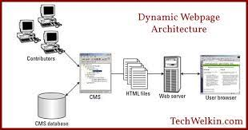
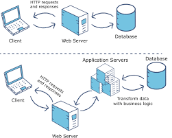

Introduction To Web
CONTENTS
- Client/Server concepts
- Components of Web Application
- Types of Web Content
- Overview of HTTP - HTTP request – response
- Generation of dynamic webpage
- Application Servers
- Web Security.
Client-Server Model

The client-server model, or client-server architecture, is a distributed application framework dividing tasks between servers and clients, which either reside in the same system or communicate through a computer network or the Internet. The client relies on sending a request to another program in order to access a service made available by a server. The server runs one or more programs that share resources with and distribute work among clients.
The client server relationship communicates in a request–response messaging pattern and must adhere to a common communications protocol, which formally defines the rules, language, and dialog patterns to be used. Client-server communication typically adheres to the TCP/IP protocol suite.
TCP protocol maintains a connection until the client and server have completed the message exchange. TCP protocol determines the best way to distribute application data into packets that networks can deliver, transfers packets to and receives packets from the network, and manages flow control and retransmission of dropped or garbled packets. IP is a connectionless protocol in which each packet traveling through the Internet is an independent unit of data unrelated to any other data units.
Client requests are organized and prioritized in a scheduling system, which helps servers cope in the instance of receiving requests from many distinct clients in a short space of time. The client-server approach enables any general-purpose computer to expand its capabilities by utilizing the shared resources of other hosts. Popular client-server applications include email, the World Wide Web, and network printing.
Categories of Client-Server Computing
There are four main categories of client-server computing:
One-Tier architecture: consists of a simple program running on a single computer without requiring access to the network. User requests don’t manage any network protocols, therefore the code is simple and the network is relieved of the extra traffic.
Two-Tier architecture: consists of the client, the server, and the protocol that links the two tiers. The Graphical User Interface code resides on the client host and the domain logic resides on the server host. The client-server GUI is written in high-level languages such as C++ and Java.
Three-Tier architecture: consists of a presentation tier, which is the User Interface layer, the application tier, which is the service layer that performs detailed processing, and the data tier, which consists of a database server that stores information.
N-Tier architecture: divides an application into logical layers, which separate responsibilities and manage dependencies, and physical tiers, which run on separate machines, improve scalability, and add latency from the additional network communication. N-Tier architecture can be closed-layer, in which a layer can only communicate with the next layer down, or open-layer, in which a layer can communicate with any layers below it.
Microsoft MySQL Server is a popular example of a three-tier architecture, consisting of three major components: a protocol layer, a relational engine, and a storage engine. Any client machines that connect directly to SQL Server must have a SQL Server client installed. Microsoft’s Client-Server Runtime Process helps manage the majority of the graphical instruction sets on Windows operating system.
What is a Client-Server Network?
A client-server network is the medium through which clients access resources and services from a central computer, via either a local area network (LAN) or a wide-area network (WAN), such as the Internet. A unique server called a daemon may be employed for the sole purpose of awaiting client requests, at which point the network connection is initiated until the client request has been fulfilled.
Network traffic is categorized as client-to-server (north-south traffic) or server-to-server (east-west traffic). Popular network services include e-mail, file sharing, printing, and the World Wide Web. A major advantage of the client-server network is the central management of applications and data.
GoTop
Components of Web Application

Components of Web Application
The Internet is no longer about static web pages and longer loading times. Over time, the Internet has made a shift towards active user engagement as well as extended functionality by means of visually pleasing and powerful web applications.
A web application is just like a normal computer application except that it works over the Internet. As everyone is on the web these days, most developers are looking to benefit from web apps and attract as many users as possible via opportune offerings.
Before venturing onto a web application development project, it is important to choose the type of web application architecture as well as the model of web app components. Making the right picks are important for the success of a web app.
We’ll discuss how the web application architecture works, its components, models, types, and then some tips to make the most out of a web application development project. But before all that, let’s begin with the definition of the web application architecture.
What is Web Application Architecture?
The web application architecture describes the interactions between applications, databases, and middleware systems on the web. It ensures that multiple applications work simultaneously. Let us understand it with a simple example of opening a webpage.
As soon as the user hits the go button after typing a URL in the address bar of a web browser, it requests for that particular web address. The server sends files to the browser as a response to the request made. The browser then executes those files to show the requested page.
Finally, the user is able to interact with the website. The most important thing to note here is the code parsed by the web browser. A web app works in a similar way.
This code might or might not have specific instructions that tell the browser how to respond with respect to the different types of user inputs.
Hence, a web application architecture has to include all the sub-components as well as the external applications interchanges for the entire software application, in the aforementioned case, which is a website.
The web application architecture is indispensable in the modern world because a major portion of the global network traffic, as well as most of the apps and devices, make use of web-based communication.
How Does It Work?
With any typical web application, there are two different codes (sub-programs) running side-by-side. These are:
Client-side Code - The code that is in the browser and responds to some user input
Server-side Code - The code that is on the server and responds to the HTTP requests
GoTop
Types of Web Content
Types of Content That Will Enrich Your Website
by Lisa McKenna, on 02/07/17
Collaboration
B2B organizations create, run across and discover some of the most highly tailored, specific and exclusive types of content on the planet.
This content might take the form of statistics on product use from target audiences, success strategies from customers, or even new alternatives relating to how certain products can be used.
While some of this B2B information gets classified as “proprietary,” and isn’t immediately published, in other cases this base of knowledge can spur a collective “aha” moment for the organization, and it should be shared. What’s the biggest reason to share this valuable information? In our view, sharing these uncommon findings is a key way organizations can establish thought leadership and engineer demand for their products and services. And the content mediums you choose to share this information can be equipped with calls-to-action allowing prospects to identify themselves.
That said, you want your content to get noticed. Blog posts and articles remain the classic avenues for many organizations. And while these two presentations continue to hold merit, why not also consider other formats to enhance the appeal and digestibility of your new information.
Here, we provide a rundown of seven major types of website content improvements to implement now, including some you may not have considered, and the benefits they offer to help you engineer demand.
Blog posts
This website staple is a well-accepted and search-engine-optimizable medium for distributing narratives, personal perspectives, and information, usually presented in a story format. Ideally written to be quick and easy reads for your audiences, these types of blogs are sometimes written in first-person and often are enhanced with photos or other artwork. These brief narratives tend to gain wider appeal when not too lengthy or complex. As such, blogs are a great opportunity for sales managers, technical experts and communications officers to share experiences, perspectives or insights from day to day. While many blog posts are copy-heavy, the best types of blog posts include one or more images to tell the most engaging stories.
Articles
The next level up in complexity from blog posts, web articles tend to provide more time-sensitive, technical or newsworthy information for specific audiences. Often written with the assistance of one or more contributing sources, articles can help organizations build authority and thought-leadership. As such they may also contain embedded links to other web resources, both internal and external, to back up claims, attribute findings or allow readers to gain background knowledge of a term or event. Web articles also typically feature photography or artwork, to attract interest, add SEO functionality, and convey the information visually.
Infographics
GoTop
Overview of HTTP - HTTP request – response

An overview of HTTP
HTTP is a protocol for fetching resources such as HTML documents. It is the foundation of any data exchange on the Web and it is a client-server protocol, which means requests are initiated by the recipient, usually the Web browser. A complete document is reconstructed from the different sub-documents fetched, for instance, text, layout description, images, videos, scripts, and more.
A Web document is the composition of different resources
Clients and servers communicate by exchanging individual messages (as opposed to a stream of data). The messages sent by the client, usually a Web browser, are called requests and the messages sent by the server as an answer are called responses.
HTTP as an application layer protocol, on top of TCP (transport layer) and IP (network layer) and below the presentation layer.Designed in the early 1990s, HTTP is an extensible protocol which has evolved over time. It is an application layer protocol that is sent over TCP, or over a TLS-encrypted TCP connection, though any reliable transport protocol could theoretically be used. Due to its extensibility, it is used to not only fetch hypertext documents, but also images and videos or to post content to servers, like with HTML form results. HTTP can also be used to fetch parts of documents to update Web pages on demand.
Components of HTTP-based systems
HTTP is a client-server protocol: requests are sent by one entity, the user-agent (or a proxy on behalf of it). Most of the time the user-agent is a Web browser, but it can be anything, for example, a robot that crawls the Web to populate and maintain a search engine index.
Each individual request is sent to a server, which handles it and provides an answer called the response. Between the client and the server there are numerous entities, collectively called proxies, which perform different operations and act as gateways or caches, for example.
Client server chain
In reality, there are more computers between a browser and the server handling the request: there are routers, modems, and more. Thanks to the layered design of the Web, these are hidden in the network and transport layers. HTTP is on top, at the application layer. Although important for diagnosing network problems, the underlying layers are mostly irrelevant to the description of HTTP.
Client: the user-agent
The user-agent is any tool that acts on behalf of the user. This role is primarily performed by the Web browser, but it may also be performed by programs used by engineers and Web developers to debug their applications.
The browser is always the entity initiating the request. It is never the server (though some mechanisms have been added over the years to simulate server-initiated messages).
To display a Web page, the browser sends an original request to fetch the HTML document that represents the page. It then parses this file, making additional requests corresponding to execution scripts, layout information (CSS) to display, and sub-resources contained within the page (usually images and videos). The Web browser then combines these resources to present the complete document, the Web page. Scripts executed by the browser can fetch more resources in later phases and the browser updates the Web page accordingly.
A Web page is a hypertext document. This means some parts of the displayed content are links, which can be activated (usually by a click of the mouse) to fetch a new Web page, allowing the user to direct their user-agent and navigate through the Web. The browser translates these directions into HTTP requests, and further interprets the HTTP responses to present the user with a clear response.
The Web server
GoTop
Generation of dynamic webpage

Dynamic web page
From Wikipedia, the free encyclopedia
Jump to navigation
Jump to search
This article has multiple issues. Please help improve it or discuss these issues on the talk page. (Learn how and when to remove these template messages)
This article includes a list of general references, but it remains largely unverified because it lacks sufficient corresponding inline citations. (December 2012)
This article needs attention from an expert in Internet. The specific problem is: inline citations. (March 2017)
Dynamic web page: example of server-side scripting (PHP and MySQL).
A server-side dynamic web page is a web page whose construction is controlled by an application server processing server-side scripts. In server-side scripting, parameters determine how the assembly of every new web page proceeds, including the setting up of more client-side processing.
A client-side dynamic web page processes the web page using JavaScript running in the browser as it loads. JavaScript can interact with the page via Document Object Model, or DOM, to query page state and modify it. Even though a web page can be dynamic on the client-side, it can still be hosted on a static hosting service such as GitHub Pages or Amazon S3 as long as there isn't any server-side code included.
A dynamic web page is then reloaded by the user or by a computer program to change some variable content. The updating information could come from the server, or from changes made to that page's DOM. This may or may not truncate the browsing history or create a saved version to go back to, but a dynamic web page update using AJAX technologies will neither create a page to go back to, nor truncate the web browsing history forward of the displayed page. Using AJAX, the end user gets one dynamic page managed as a single page in the web browser while the actual web content rendered on that page can vary. The AJAX engine sits only on the browser requesting parts of its DOM, the DOM, for its client, from an application server.
DHTML is the umbrella term for technologies and methods used to create web pages that are not static web pages, though it has fallen out of common use since the popularization of AJAX, a term which is now itself rarely used. Client-side-scripting, server-side scripting, or a combination of these make for the dynamic web experience in a browser.
Contents
1 Basic concepts
2 History
3 Server-side scripting
4 Client-side scripting
5 Combination technologies
6 See also
7 References
8 External links
GoTop
Application Servers

Application server
From Wikipedia, the free encyclopedia
Jump to navigation
Jump to search
An application server is a server that hosts applications.[1]
Application server frameworks are software frameworks for building application servers. An application server framework provides both facilities to create web applications and a server environment to run them.
An application server framework contains a comprehensive service layer model. It includes a set of components accessible to the software developer through a standard API defined for the platform itself. For Web applications, these components usually run in the same environment as their web server(s), and their main job is to support the construction of dynamic pages. However, many application servers do more than generate web pages: they implement services such as clustering, fail-over, and load-balancing, so developers can focus on implementing the business logic.[2]
In the case of Java application servers, the server behaves like an extended virtual machine for running applications, transparently handling connections to the database on one side, and, often, connections to the Web client on the other.[citation needed]
Other uses of the term may refer to the services that a server makes available or the computer hardware on which the services run.[citation needed]
Contents
1 History
2 Application Server definition
3 Java application servers
4 .NET Framework
4.1 Microsoft
4.2 Third-party
5 PHP application servers
6 Mobile application servers
6.1 Purpose
6.2 Common features
6.3 Mobile application servers vs. application servers vs. web servers
6.3.1 Application servers
6.3.2 Web servers
6.3.3 Mobile application servers
6.4 Deployment models
7 See also
8 References
History
The term was originally used[3] when discussing early client–server systems to differentiate servers that contain application logic SQL services[4] and middleware servers as distinct from other types of data-servers.
Currently, despite the fact that web-browsers have become ubiquitous and are typically the client for end-users in many application deployment strategies, browser-based web apps represent only a subset of application-server technologies.
Application Server definition
ve been dominated by WebLogic Application Server by Oracle, WebSphere Application Server from IBM and the open source JBoss Enterprise Application Platform (JBoss EAP) by Red Hat.
GoTop
Web Security
What is Web Security?
Web security is also known as “Cybersecurity”. It basically means protecting a website or web application by detecting, preventing and responding to cyber threats.
Web Security
Websites and web applications are just as prone to security breaches as physical homes, stores, and government locations. Unfortunately, cybercrime happens every day, and great web security measures are needed to protect websites and web applications from becoming compromised.
That’s exactly what web security does – it is a system of protection measures and protocols that can protect your website or web application from being hacked or entered by unauthorized personnel. This integral division of Information Security is vital to the protection of websites, web applications, and web services. Anything that is applied over the Internet should have some form of web security to protect it.
Details of Web Security
There are a lot of factors that go into web security and web protection. Any website or application that is secure is surely backed by different types of checkpoints and techniques for keeping it safe.
There are a variety of security standards that must be followed at all times, and these standards are implemented and highlighted by the OWASP. Most experienced web developers from top cybersecurity companies will follow the standards of the OWASP as well as keep a close eye on the Web Hacking Incident Database to see when, how, and why different people are hacking different websites and services.
Essential steps in protecting web apps from attacks include applying up-to-date encryption, setting proper authentication, continuously patching discovered vulnerabilities, avoiding data theft by having secure software development practices. The reality is that clever attackers may be competent enough to find flaws even in a fairly robust secured environment, and so a holistic security strategy is advised.
Available Technology
There are different types of technologies available for maintaining the best security standards. Some popular technical solutions for testing, building, and preventing threats include: